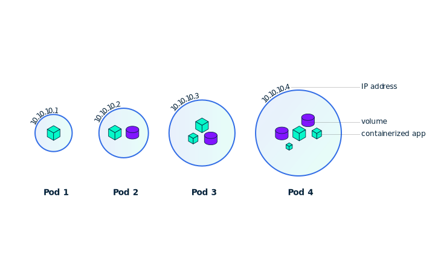
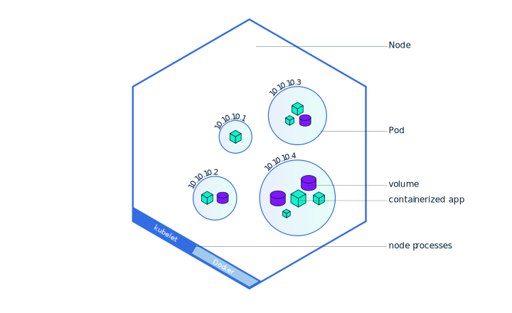

Pods and Nodes
Pods
When you created a Deployment in Module 2, Kubernetes created a Pod to host your application instance. A Pod is Kubernetes abstraction that represents a group of one or more application containers (such as Docker or rkt), and some shared resources for those containers. Those resources include:
- Shared storage, as Volumes
- Networking, as a unique cluster IP address
- Information about how to run each container, such as the container image version or specific ports to use
A Pod models an application-specific “logical host” and can contain different application containers which are relatively tightly coupled. For example, a Pod might include both the container with your NodeJS app as well as a different container that feeds the data to be published by the NodeJS webserver. The containers in a Pod share an IP Address and port space, are always co-located and co-scheduled, and run in a shared context on the same Node.
Pods are the atomic unit on the Kubernetes platform. When we create a Deployment on Kubernetes, that Deployment creates Pods with containers inside them (as opposed to creating containers directly). Each Pod is tied to the Node where it is scheduled, and remains there until termination (according to restart policy) or deletion. In case of a Node failure, identical Pods are scheduled on other available Nodes in the cluster.
Summary:
- Pods
- Nodes
- Kubectl main commands
A Pod is a group of one or more application containers (such as Docker or rkt) and includes shared storage (volumes), IP address and information about how to run them.
Pods overview

Nodes
A Pod always runs on a Node. A Node is a worker machine in Kubernetes and may be either a virtual or a physical machine, depending on the cluster. Each Node is managed by the Master. A Node can have multiple pods, and the Kubernetes master automatically handles scheduling the pods across the Nodes in the cluster. The Master's automatic scheduling takes into account the available resources on each Node.
Every Kubernetes Node runs at least:
- Kubelet, a process responsible for communication between the Kubernetes Master and the Nodes; it manages the Pods and the containers running on a machine.
- A container runtime (like Docker, rkt) responsible for pulling the container image from a registry, unpacking the container, and running the application.
Containers should only be scheduled together in a single Pod if they are tightly coupled and need to share resources such as disk.
Node overview

Troubleshooting with kubectl
In Module 2, you used Kubectl command-line interface. You'll continue to use it in Module 3 to get information about deployed applications and their environments. The most common operations can be done with the following kubectl commands:
- kubectl get - list resources
- kubectl describe - show detailed information about a resource
- kubectl logs - print the logs from a container in a pod
- kubectl exec - execute a command on a container in a pod
You can use these commands to see when applications were deployed, what their current status is, where they are running and what their configuration is.
Now that we know more about our cluster components and the command line, let’s explore our application.
A node is a worker machine in Kubernetes and may be a VM or physical machine, depending on the cluster. Multiple Pods can run on one Node.